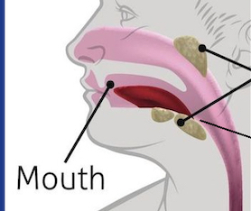

Mouth
The mouth is the first organ in the alimentary canal.
Teeth: Cuts and grinds food into smaller pieces
Saliva: Mucus that softens food
Tongue: Mixes food with saliva and rolls food into a ball
Saliva
Saliva is a liquid produced by the salivary glands.
- Contains salivary amylase
- Speeds down chemical breakdown of starch into maltose
- Food mixed with saliva is called bolus